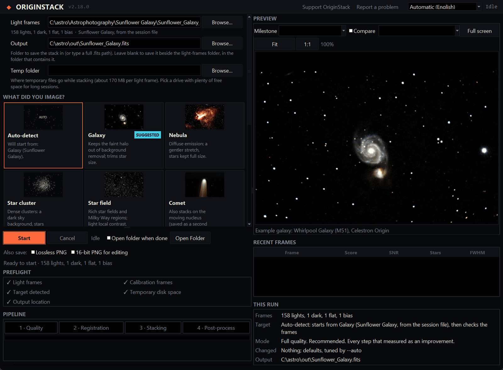

ワンクリックですべて完了
ほかのソフトはスタックで止まるか、仕上げは自分でやるための道具箱を渡すだけです。OriginStack ではスタックは道のりの半分にすぎません。下の仕上げ工程が同じワンクリックの中で、この順番で、認識した天体の種類に合わせて実行されます。どの工程もオフにでき、ほかのソフトで仕上げたい人のためにリニアなスタックも保存されます。
星から色を決める
画像内の星を Gaia カタログと照合し、既知の色から色合いを決めるので、太陽に似た星は白く写ります。手動のホワイトバランスは不要です。
かぶりを除去
光害、月明かり、周辺減光は、画面に明るさの傾きを残します。天体の周りの空に背景モデルを当てはめて差し引きます。
きれいでニュートラルな空
残ったホットピクセルや色ノイズを取り除き、色かぶりのない均一でニュートラルな黒い空に整えます。
ノイズは減らし、ディテールは残す
フィラメントや渦巻腕を守るウェーブレットノイズ除去。Origin で撮った銀河では、実際の Origin のセッションだけで学習した小さなニューラルネットワークが、シーイングによるぼけを補正しノイズも一度に取り除きます。
星を引き締め、構造を際立たせる
星を色を失わずに小さくして天体を埋もれさせず、天体の中くらいのスケールのディテールをノイズに対して浮かび上がらせます。
強調処理をして、すぐ共有できる形に
淡い光を持ち上げつつ明るい中心部を飛ばさない強調処理で、完成した JPEG が得られます。アプリでは、処理をやり直さずに 10 種類のほかの強調処理を後から試せます。
それ以前に各フレームで行われる処理と、各工程の考え方は仕組みにあります。Siril、DeepSkyStacker、PixInsight、Astro Pixel Processor、そして Origin 自身のスタックとの比較は専用のページにあります。10 回分のセッションを Origin 自身のスタックと並べて表示しています。
一晩分のフレームを約1分で
オメガ星雲 114 フレーム、8 コアのノート PC で、生ファイルから完成画像まで 62 秒（10 月初めは 89 秒）。赤いブロックが画像の見栄えを良くする部分で、残りは 114 フレームの位置を揃える処理です。
- 読み込み・キャリブレーション・評価13.7 s
- 位置合わせ1.6 s
- 整列とスタック22.0 s
- 画像の仕上げ18.1 s
- ディスクと準備6.3 s
読み込み・キャリブレーション・評価
各フレームをバイアス、ダーク、フラットで補正し、センサーのカラーモザイクから画像に変換して、シャープさとノイズを評価します。明らかに不良なフレームは除外されます。
位置合わせ
フレームを1ピクセル未満の精度で揃えます。Origin のような経緯台で生じるゆっくりとした視野回転も補正します。
整列とスタック
揃えたフレームを外れ値除外しながら合成するため、人工衛星の軌跡、ホットピクセル、宇宙線は平均に混ざらずに除去されます。
画像の仕上げ
背景のかぶり、色、ノイズを処理し、その後見やすいように強調します。保存される FITS ファイルはリニアのままなので、さらなる処理にそのまま使えます。
フレームは1枚ずつ処理されるため、500 フレームでも 50 フレームとほぼ同じメモリで済みます。実行中の一時ファイルはフレームあたり約 100 MB のディスクを使います。メモリに余裕がある場合は、位置合わせ済みフレームを代わりにメモリ上に保持し、常に 5 分の 1 の空きを残します。
速い理由。特に重い処理のうち 80 以上は Python ではなくコンパイル済みの Rust です。標準のスタック合成は置き換え前の NumPy コードより約 37 倍、ホットピクセル修復は 25〜55 倍、背景の当てはめは約 31 倍速く、そのほとんどは以前とまったく同じ数値を返します。フレーム処理は CPU の実際の振る舞いに合わせて、物理コアの 4 分の 3 に 1 コア 1 ワーカーを割り当てます。また同じ天体の複数夜は、夜ごとではなく一度だけ仕上げます。オリオン大星雲の 7 セッションは 15 分から約 8 分になりました。
処理を見守るか、設定を省略するか
フレームのフォルダを指定し、何を撮影したかを選んで（またはアプリに判断させて）、「開始」を押すだけです。すべての設定に1行の説明があり、残りは既定値が対象に合わせて選びます。以下は、後述の比較で使ったひまわり銀河のフレームをスタックしたときの実際の画面です。Celestron Origin の画像処理は初めてですか？ステップ・バイ・ステップのガイドでは、望遠鏡が保存するセッションフォルダから説明しています。




比較
Origin が保存したフレームから、1 回の実行で何が得られるか。Astro Pixel Processor を含む全体の表と各ソフトについての注記は比較ページにあります。
| OriginStack | Siril | DeepSkyStacker | PixInsight | Origin アプリ | |
|---|---|---|---|---|---|
| 生フレームから完成画像まで 1 回の実行で | はい、ワンクリック | スタックはスクリプト、仕上げは一つずつ | スタックと簡単なレベル調整 | スタックは自動、仕上げは一つずつ | はい、望遠鏡内で |
| かぶり、Gaia による色、ノイズ、星、強調処理 | すべて自動、対象ごとに調整 | 個別のツール | 含まれない | 個別のプロセス、一部は有料アドオン | かぶり除去あり、その他は記載なし |
| 同じフレームでの星の大きさ (OriginStack = 1.00、小さいほどシャープ) | 1.00 | 1.01〜1.13 | 1.09 | 未測定 | 1.04〜1.36 |
| 価格 | 無料、オープンソース | 無料、オープンソース | 無料、オープンソース | 有料ライセンス | 望遠鏡に付属 |
Siril と DeepSkyStacker との実測比較
同じフレーム、同じバイアス・ダーク・フラット、同じマシンで、各ツールを標準的な設定で実行しました。Celestron Origin の3セッション：オメガ星雲（30 秒 × 114）、ひまわり銀河（20 秒 × 158）、ちょうこくしつ座銀河（10 秒 × 532）。
| セッション | スタックのみ | OriginStack、完成画像 | 最大メモリ | 星像の幅 |
|---|---|---|---|---|
| オメガ、114 フレーム | 44 s / 54 s | 62 s | 12.0 / 6.5 GB | 4.42 / 4.56 px |
| ひまわり、158 フレーム | 54 s / 67 s | 81 s | 14.3 / 8.9 GB | 3.51 / 3.60 px |
| ちょうこくしつ座、532 フレーム | 128 s / 159 s | 144 s | 9.1 / 11.2 GB | 2.66 / 3.01 px |
同じ恒星での星像の幅（小さいほどシャープ）
オメガ
ひまわり
ちょうこくしつ座
数値が示すこと
シャープさ：3つすべてで Siril よりシャープ。同じ恒星で比べると、OriginStack はオメガで 3% 細く（4.42 px 対 4.56 px）、ひまわりで 2%、ちょうこくしつ座で 10% 細くなりました。これを実現したのは2つの変更です。既定で有効な厳密な画像コアディションは、細部の各スケールを、各フレームのシャープさ・透明度・ノイズに応じて重み付けします（Zackay & Ofek, 2017）。もう1つは、すべてのフレームでほとんどの明るい恒星のピークを平坦にしていたホットピクセル処理の修正です — アンダーサンプリングの星像では、ピクセルを隣接ピクセルと比べるだけの判定にとって、恒星の中心はホットピクセルとまったく同じに見えます。また、使用したフレーム数も多く、Siril の 111、157、525 に対して 114、158、532 でした。
ノイズ：シャープさを揃えれば Siril より低ノイズ。シャープなスタックほどピクセル単位のノイズは多くなるため、公平な比較として、OriginStack の各チャンネルを恒星の幅が Siril とちょうど同じになるまでぼかしました。すると赤/緑/青のノイズは、Siril に対してオメガで 0.80、0.86、0.88 倍、ひまわりで 0.84、0.66、0.93 倍（赤の星像はもともと Siril と同じ幅でした）、ちょうこくしつ座で 0.82、0.72、0.89 倍です。揃えずにピクセル単位で比べると 0.92、1.02、1.05、0.84、0.73、0.97、0.98、0.85、1.28 倍です — 恒星がシャープなほど、この数値は大きくなります。
速度：3つすべてで Siril より高速。同じマシンで続けて実行した、スタック完了までの時間：オメガで 44 秒（Siril 54 秒）、ひまわりで 54 秒（同 67 秒）、ちょうこくしつ座で 128 秒（同 159 秒）。OriginStack は、Siril が行わないフレームごとの処理 — 全フレームでの品質評価、ホワイトバランス、星検出 — も行っていますが、その分を位置合わせとスタックで取り戻しています。どちらのツールも、同じ条件の実行でも1日のうちに最大 3 分の 1 ほど時間が変動したため（Siril だけでもオメガで 55〜86 秒）、同じ行の中で比較してください。完成画像の作成にはさらに 16〜27 秒かかります。
メモリとディスク。OriginStack は、余裕があれば位置合わせ済みのフレームをメモリ上に保持します。短い2つのセッションはそうで、12.0 GB と 14.3 GB（Siril は 6.5 GB と 8.9 GB）でした。ちょうこくしつ座では一時ファイルに置かれ、使用量は 9.1 GB（Siril は 11.2 GB）でした。一時ディスク使用量は、短い2つのセッションでは少なく（19 GB と 23 GB に対して 11 GB と 15 GB）、ちょうこくしつ座では多くなりました（57 GB に対して 63 GB）。
DeepSkyStacker はオメガで 14 分 8 秒かかり、星像は他の2つより甘く、既定の設定ではホットピクセルの筋と位置合わせに失敗した数フレームが残りました。
OriginStack の強みはスタックの後にあります。設定なしで同じ実行の中で画像を仕上げ、診断でその夜の状況を説明し、空の位置をお使いのコンピューター上で求め、必要なら完全オフラインで動作し、他のツールがユーザー任せにしているその他の処理もこなします。単純なスタックでも、今では3セッションすべてで Siril よりシャープで、シャープさを揃えれば低ノイズ、そして3つすべてで高速です。3セッションはすべて 2026-10-02 にこのバージョンで測定し直しました。DeepSkyStacker の数値は以前の実行によるもので、再測定はしていません。これらの数値は過去にも訂正しています。このページの以前の版では、測定する恒星の選び方のせいでシャープさを過大評価していました。また別の版では、実際には平滑化だったノイズ改善を宇宙線検出の効果としていました。1台のカメラによる3セッションは小さなサンプルで、どちらのツールも標準的な設定のままです。tools/bench_vs_siril.py で、ご自身のフレームでこのすべてを再現できます。
望遠鏡自身のスタックとの比較
Celestron Origin のセッションフォルダには、望遠鏡自身による結果 FinalStackedMaster.tiff も含まれています。4つのセッションで、3つすべてに同じライトフレームを使用：くろめ銀河（20 秒 × 81）、ひまわり銀河（20 秒 × 158）、かに星雲（133 フレーム）、ヘルクレス座球状星団（56 フレーム）。OriginStack は既定の設定、Siril は上記の設定です。
| セッション | 対 Origin：星像の幅 | 対 Origin：ノイズ | 対 Siril：星像の幅 | 対 Siril：ノイズ |
|---|---|---|---|---|
| くろめ銀河、81 フレーム | 8.15 / 8.38 px | 1.00 / 1.04 / 1.06 | 8.21 / 8.26 px | 0.94 / 1.09 / 0.97 |
| ひまわり、158 フレーム | 3.54 / 4.25 px | 0.96 / 0.93 / 0.95 | 3.50 / 3.58 px | 1.02 / 1.03 / 1.02 |
| かに星雲、133 フレーム | 2.54 / 3.50 px | 1.00 / 0.92 / 0.95 | 2.54 / 2.77 px | 1.04 / 0.99 / 1.01 |
| ヘルクレス座、56 フレーム | 5.67 / 5.98 px | 0.99 / 0.96 / 1.01 | 5.68 / 5.74 px | 1.00 / 1.04 / 1.01 |
同じ恒星での、OriginStack に対する星像の幅の比（小さいほどシャープ）
くろめ銀河
ひまわり銀河
かに星雲
ヘルクレス座球状星団
数値が示すこと
シャープさ：どのセッションでも同じ順位。OriginStack、Siril、Origin の順です。望遠鏡自身のスタックが3つの中で最も甘く、星像は OriginStack に比べてくろめ銀河で 4%、ひまわりで 17%、かにで 27%、ヘルクレス座球状星団で 5% 太く、その大部分は青チャンネルです。Siril は OriginStack に近く、1〜8% 太い程度です。
ノイズ：互角。恒星の大きさのスケール — どれだけ暗い星まで見えるかを決めるノイズ — で測ると、3つはどのチャンネルでも互いに数パーセント以内です。OriginStack のシャープさはノイズの面で何の代償もありません。
Origin がそのままで優れている点：保存される画像の時点で、空のかぶりがすでに除去されています。OriginStack は仕上げの処理でかぶりを除去します。ここでの Siril のスタックには除去処理は入っていません。
この比較で OriginStack の不具合が2つ見つかりました。完成画像を並べると、小さく淡い対象で空がまだらになり、飽和した恒星に青い円盤が出ていました。どちらも修正済みで、上の数値は修正後に測定し直したものです。

測定方法：Origin の TIFF はリニアですが大きなペデスタル（底上げ）が乗っているため、最も明るい恒星の中心はクリップしています。各スタックは、画像がリニアな部分で測定したカラーチャンネルごとのゲイン1つで OriginStack の明るさのスケールに合わせ、クリップした恒星は除外しました。ノイズの比はそのゲインに依存するため、±5〜10% の幅があるものとして読んでください。1台の望遠鏡による4セッションは小さなサンプルです。tools/bench_vs_origin.py で、ご自身のフレームで再現できます。
作例
すべて Celestron Origin の生フレームを OriginStack でスタック・画像処理したもので、測定値 Bortle 7-9 の空（強い光害、自宅の庭や屋上で、暗い空の観測地ではありません）で撮影しています。画像ごとの測定値と方法は README をご覧ください。


OriginStack に設定がある天体の種類ごとに1枚ずつ、それぞれ撮影したすべての夜からスタックしました。ほかの作例はギャラリーへ。
インストール
????????????????????????????????????????
Windows????????????????????
Windows インストーラー
Windows 10 と 11 向けの無料スタックソフトです。最新リリースからセットアップファイルをダウンロードして実行してください。現在のユーザーだけにインストールされ、スタートメニューの項目とアンインストーラーが追加されます。Python は不要です。
インストールしたくない場合は、ポータブル版の exe をお使いください。1 つのファイルだけで、任意のフォルダーや USB メモリから実行できます。起動のたびに自身を展開するため、インストール版より数秒遅れて開きます。
zip 版がよい場合は、まず「すべて展開」を行い、展開したフォルダから OriginStack.exe を実行してください。zip の中から直接実行すると失敗します。
macOS アプリ
最新リリースからお使いの Mac 用の zip をダウンロードしてください：Apple シリコン（M1 以降、macOS 14 以降が必要）なら macos-arm64、Intel Mac なら macos-x86_64 です。zip を開き、OriginStack を「アプリケーション」フォルダにドラッグします。Python は不要です。
アプリはまだ Apple の署名を受けていないため、初回起動時に macOS がブロックします。OriginStack を Control キーを押しながらクリックして「開く」を選び、もう一度「開く」を選んでください。macOS 15 以降では、一度開こうとした後、「システム設定」の「プライバシーとセキュリティ」で「このまま開く」を選んでください。または、ターミナルでダウンロードのフラグを解除します：
xattr -dr com.apple.quarantine /Applications/OriginStack.app
Mac 版は Windows 版に比べて実際の使用実績がまだ少なめです。
Linux バンドル
最新リリースから OriginStack-<version>-linux-x64.tar.gz をダウンロードし、展開してインストーラーを実行してください。現在のユーザーだけにインストールされ、アプリケーションメニューに項目が追加されます。Python も root 権限も不要です。
tar xzf OriginStack-*-linux-x64.tar.gz cd OriginStack-*-linux-x64 ./install.sh
glibc 2.35 以降（Ubuntu 22.04、Debian 12、Fedora 36 以降）が必要で、Windows 版に比べて実際の使用実績はまだ少なめです。削除するには ./install.sh --uninstall を実行してください。
ソースから
Windows、Linux（テスト済み）、macOS（未テスト）で：
git clone https://github.com/hd152/originstack cd originstack pip install -r requirements.txt python desktop_app.py
コマンドラインでも同じことができます：python originstack.py -d lights/ -o stacked.fits。オプションの Rust 拡張で重い処理が高速化されます。なくても通常の NumPy で動作します。
その他の機能
バイアス・ダーク・フラットによるキャリブレーション、ホットピクセルと人工衛星の軌跡の除去、シグマクリップなどの外れ値を除外するスタック方式、オプションのドリズル、背景とかぶりの除去、ノイズ除去とデコンボリューション、プレートソルブ、色較正、測光、彗星モード。Celestron Origin やその他のワンショットカラーの天体写真データ向けに、DeepSkyStacker や Siril に代わる無料のソフトをお探しなら、まさにそのために作られています。
同じ対象の夜は積み重なります。子持ち銀河を5夜分合成すると、最も良い1夜だけの場合より空のノイズが30%少なく、星が12%細くなりました。--merge を使えば、古いフレームを残さずに夜を追加できます。仕組み。
対応形式
Celestron Origin の生ファイル（各セッションフォルダ内の FITS フレームと、その info.json）、およびカラーカメラの FITS、カメラ RAW（Canon、Nikon、Sony など。rawpy が必要）、TIFF、XISF のフレーム。惑星撮影用に SER 動画にも対応しています。1つのフォルダに複数の形式を自由に混在できます。
完全にオフラインで使いたい場合は、--offline を指定するか、アプリでチェックを入れてください。OriginStack はネットワーク接続を一切行いません。
生成AIは使わず、クラウドも使いません
OriginStack は画像を AI サービスに送ることはなく、画像の内容を生成したり作り出したりすることもありません。処理はこのプロジェクトのために書かれた、文書化された古典的な信号処理で、キャリブレーションや位置合わせから背景除去、ノイズ低減まで、すべてソースコードで確認できます。ほかの天文ソフトウェアもアカウントもクラウドサービスも不要で、使うのは一般的なオープンソースの科学計算ライブラリだけです。
2 つの任意の処理、--denoiser nn と --deconvolve nn は、実際の Celestron Origin のセッションだけで学習した小さなニューラルネットワークを使います。お使いのコンピューター上で動作し、独立したスタックと照合して、データにない星や細部を加えないことを確認しています。自動設定では Origin の銀河のセッションに後者を使います。--deconvolve off で無効にできます。仕組み。